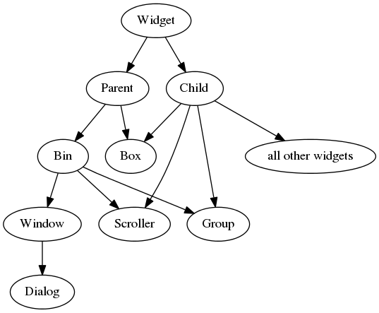

bananagui.widgets - the widget classes¶
BananaGUI uses a concept of widgets. A widget is an element of the GUI
that the user sees. For example, if we have a BananaGUI program with a
window and a button in it, it consists of a Window widget and
a Button widget.
The classes inherit from each other like this:
Base classes¶
These classes cannot be instantiated, but other widget classes are based
on these. You can use these classes with isinstance() and
issubclass() or you can use their methods with other widgets that
inherit from them.
-
class
bananagui.widgets.Widget¶ A baseclass for all widgets.
All widgets inherit from this class, so all widgets have the methods that this class has.
-
focus()[source]¶ Give the keyboard focus to this widget.
Widget classes have a
can_focusattribute, and this method cannot be called if it’s False.Focusing a
WindoworDialogbrings it in front of all other windows. When focusing something else it’s recommended to first create the widgets and then focus one of them to make sure that the widget gets focused correctly with all GUI toolkits.
-
real_widget¶ This is the real GUI toolkit’s widget that BananaGUI uses.
-
-
class
bananagui.widgets.Child(tooltip=None, grayed_out=False, expand=(True, True))¶ Base class for widgets that can be added to
Parentwidgets.BananaGUI keeps track of the parent internally. When a child is added to a parent widget, BananaGUI remembers it. The child can be removed from the parent widget and added into it again, but it cannot be added to other parent widgets. For example:
box1 = widgets.Box() box2 = widgets.Box() label = widgets.Label() # label doesn't have a parent box1.append(label) # label's parent is now box1 box1.remove(label) # label's parent is still box1 box2.append(label) # this raises an exception!
-
expand¶ Two-tuple of horizontal and vertical expanding.
This is
(True, True)by default, so the widget expands in both directions.When multiple widgets are next to each other in a layout widget, at least one of them should expand in the layout widget’s direction. Like this:
,------------------------------------------------. | non- | | |expanding | expanding widget | | widget | | `------------------------------------------------'
Not like this:
,------------------------------------------------. | non- | non- | | |expanding |expanding | empty space | | widget | widget | | `------------------------------------------------'
This way the children will behave consistently with all GUI toolkits. You can use a
Dummywidget to fill the empty space if needed:,------------------------------------------------. | non- | non- | | |expanding |expanding | Dummy widget | | widget | widget | | `------------------------------------------------'
-
grayed_out¶ True if the widget looks like it’s disabled.
This can be used to tell the user that the widget can’t be used for some reason.
-
tooltip¶ The widget’s tooltip text or None for no tooltip.
None by default.
-
-
class
bananagui.widgets.Parent¶ A base class for widgets that contain other widgets.
-
children¶ A view of this widget’s children.
Dictionaries have a
keys()method that returns a set-like view of the keys. This is similar, but this containsChildwidgets instead of keys.Subclasses of
Parentprovide different kinds of ways to access the children, but all Parent widgets have a children attribute that works consistently.
-
-
class
bananagui.widgets.Bin(child=None, **kwargs)¶ Base class for widgets that may contain only one child at a time.
See Layout widgets if you want to have multiple widgets in a Bin widget. This whole concept may seem stupid, but BananaGUI would be more complicated without separate Bin widgets and layout widgets.
-
add(child: bananagui.widgets.Child)[source]¶ Add a child widget into this widget.
This widget must not contain another child. The
childattribute will be set to the new child.
-
Window widgets¶
Almost all GUI applications have one or more windows. These classes
allow you to create windows in BananaGUI. Note that these widgets
inherit from Bin.
-
class
bananagui.widgets.Window(title='BananaGUI Window', *, child=None, resizable=True, minimum_size=(0, 0), hidden=False, **kwargs)¶ A class that represents a window.
,---------------------------------------. | Window | _ | o | X | |---------------------------------------| | | | | | | | | | | | | | | | | | | | | | | `---------------------------------------'
These windows don’t have a parent window. You can create multiple windows like this.
-
close()[source]¶ Close the window and set
closedto True.Closed windows are not displayed to the user, and most operations on a closed window raise an exception.
This method can be called multiple times and it will do nothing after the first call.
False if the window is showing.
Hiding the window is easier than creating a new window when a window with the same content needs to be displayed multiple times.
If you are wondering why your window isn’t showing up, it’s not necessarily hidden. There are other things that could be also wrong:
- The window might be closed because
close()has been called. - The mainloop might not be running. See
bananagui.mainloop.
- The window might be closed because
-
minimum_size¶ Two-tuple of smallest allowed width and height.
If the content of the window take up more space than this, this is ignored. This is
(0, 0)by default, so the window is always large enough for its content.
-
on_close¶ A callback that runs when the user tries to close the window.
This callback doesn’t actually run when
close()is called. The close method closes the window, but this runs when the user tries to close the window. Usually you should connect this tobananagui.mainloop.quit().
-
resizable¶ True if the user can resize the window.
-
size¶ The current window size.
Like most other sizes, this is a two-tuple of integers. Adding widgets to the window may change this, so setting this on initialization is not supported.
-
title¶ The text in the top bar.
-
-
class
bananagui.widgets.Dialog(parentwindow: bananagui.widgets.Window, title=None, *, resizable=False, **kwargs)¶ A window that has a parent window.
,---------------------------------------. | Parent window | _ | o | X | |---------------------------------------| | | | | | | | | | | | | | ,-------------------------------. | | Dialog | X | | |-------------------------------| | | | | | | `---------------| | | | | | `-------------------------------'This class inherits from
Window. The title defaults to parentwindow‘s title.
Labels¶
Labels are Child widgets that display something to the user.
-
class
bananagui.widgets.Label(text='', *, align=<Align.CENTER: 2>, **kwargs)¶ A widget that displays text.
,---------------. | Hello World! | `---------------'
See also
-
align¶ How the text is aligned.
This needs to be a
bananagui.Alignmember.
-
text¶ The text in the label.
-
-
class
bananagui.widgets.ImageLabel(image=None, **kwargs)¶ A widget that displays an image.
,---------------. | __ | | _ / / | | )/ / | | / /_ | | | | \ | | |_/ | `---------------'
-
image¶ The image displayed in the button.
This should be None or a
bananagui.images.Image.
-
Buttons¶
Buttons are Child widgets that display something like labels,
but they can also be clicked.
-
class
bananagui.widgets.Button(text='', **kwargs)¶ A button that displays text in it.
_______________ |,--------------\ || Click me! | `---------------'
-
on_click¶ A callback that runs when the button is clicked.
-
text¶ The text in the button.
An empty string by default.
-
-
class
bananagui.widgets.ImageButton(image=None, **kwargs)¶ A button that displays an image.
_______________ |.--------------\ || __ | || _ / / | || )/ / | || / /_ | || | | \ | || |_/ | `---------------'
-
image¶ The image displayed in the button.
This can be None or a
bananagui.images.Image.
-
on_click¶ A callback that runs when the button is clicked.
-
Layout widgets¶
Layout widgets are Parent widgets and Child widgets
at the same time. These widgets allow you to add multiple widgets inside
a Bin widget. There is no Layout baseclass, layout widgets
simply inherit from Parent and Child at the same time.
Currently BananaGUI has only one layout widget:
-
class
bananagui.widgets.Box(orient=<Orient.VERTICAL: 2>, **kwargs)¶ A widget that contains other widgets next to or above each other.
,----------. | box[0] | ,-----------------------------------. |----------| | box[0] | box[1] | box[2] | | box[1] | `-----------------------------------' |----------| | box[2] | `----------'
To access the children just treat the Box object like a list:
box.append(child) # add a child box.remove(child) # remove a child box[0] # get the first child box[:3] # get a list of first three children del box[:3] # remove first three children box[:] # get a list of children if box: ... # check if there are children in the box
Unfortunately
random.shuffle(box)doesn’t work because it wants to temporarily add the same children to the box twice. You need to do this instead:children = box[:] random.shuffle(children) box[:] = children
See also
The
Checkboxwidget has nothing to do with this widget, but it has a similar name so you might be looking for it.
Progress bars¶
These widgets display a progress bar to the user.
-
class
bananagui.widgets.Progressbar(*, progress=0, **kwargs)¶ A progress bar widget.
,-------------------. | OOOOOOOOOOO | `-------------------'
The progress bar is always horizontal. Contact me if you need a vertical progress bar and I’ll implement it.
-
progress¶ The progressbar’s position.
This is always between 0 and 1.
-
-
class
bananagui.widgets.BouncingProgressbar(*, bouncing=False, **kwargs)¶ A progressbar-like widget that bounces back and forth.
,-------------------. | OOOO | `-------------------'
The progressbar doesn’t bounce by default. Set
bouncingto True to make it bounce.-
bouncing¶ True if the widget actually bounces.
-
Text editing widgets¶
These widgets display text to the user, but they also allow the user to edit that text.
-
class
bananagui.widgets.Entry(text='', *, secret=False, **kwargs)¶ A one-line text widget.
,-----------------------. | Enter something... | `-----------------------'
See also
-
secret¶ True if the text is hidden with stars or balls.
It’s also impossible to copy-paste from a secret entry. This is useful for asking a password.
-
-
class
bananagui.widgets.TextEdit(text='', *, tab='t', **kwargs)¶ A multiline text widget.
,-----------. | Line 0 | | Line 1 | | Line 2 | | Line 3 | | | `-----------'
Note
The TextEdit widget doesn’t work that well right now. I’ll make a better TextEdit widget when I have time and it will have a different API, so don’t rely on this widget.
-
tab¶ The character that pressing tab inserts.
-
Number selecting widgets¶
You can use Entry widgets for selecting numbers, but these
widgets are usually a better choice.
-
class
bananagui.widgets.Spinbox(valuerange: range, *, value=None, **kwargs)¶ A widget for selecting an integer.
,-----------------------. | 123 | + | - | `-----------------------'
You can use Entry widgets for selecting numbers, but this widget provides nicer + and - buttons.
Spinboxes can’t be used with floats because the allowed values are represented by a Python range object, so you need to use an Entry if you want to use floats.
-
class
bananagui.widgets.Slider(valuerange: range, orient=<Orient.HORIZONTAL: 1>, *, value=None, **kwargs)¶ A slider for selecting a number.
| O -----O-------- | | |
Currently floats aren’t supported. If you want float support, let me know and I’ll implement it.
Miscellaneous widgets¶
-
class
bananagui.widgets.Checkbox(text='', *, checked=False, **kwargs)¶ A widget that can be checked.
,-------------------. | | Check me! | `-------------------' ,-------------------. | X | Uncheck me! | `-------------------'
The Checkbox widget has nothing to do with the
Boxwidget.-
checked¶ True if the checkbox is currently checked.
-
text¶ The text next to the checkmark.
-
-
class
bananagui.widgets.Dummy(**kwargs)¶ An empty widget.
,-----------. | | | | `-----------'
This is useful for creating layouts with empty space that must be filled with something. See
Child.expandfor more info.
-
class
bananagui.widgets.Separator(orient=<Orient.HORIZONTAL: 1>, **kwargs)¶ A horizontal or vertical line.
|| Widget 1 || ================|| Widget 3 Widget 2 || ||Usually there’s no need to add separators between widgets, but they are sometimes useful.
-
orient¶ The orient set on initialization.
This is always a
bananagui.Orientmember.
-
-
class
bananagui.widgets.Scroller(child=None, **kwargs)¶ A widget that adds scrollbars around its child.
,-------------. | | | | | | | big | | | child | | | widget | | | |o| | |o| | |o| |___________|_| | ooo | `-------------'
The scroller displays a horizontal and a vertical scrollbar automatically when needed.
Note
This widget is currently not available on Tkinter.